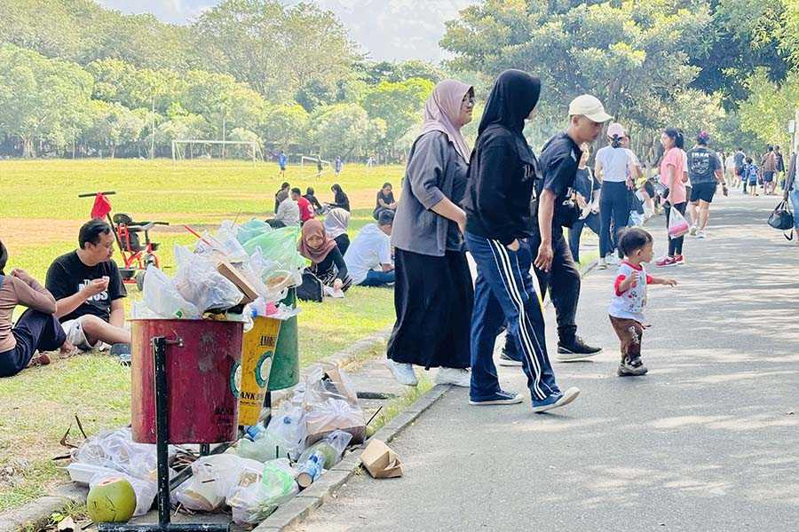
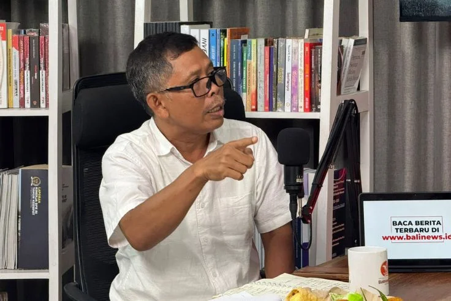

Ekosistem Hijau Bali
ADIMARA: Ekosistem Waste to Value Berbasis Green UMKM untuk Membangun Ekonomi Sirkular Bali
ADIMARA adalah prototype platform yang menghubungkan data lingkungan, inovasi pengolahan limbah, UMKM, dan marketplace hijau dalam satu ekosistem.
✦ Prototype lomba — seluruh transaksi bersifat simulasi.
IMPACT TODAY
LIVE PROTOTYPE
1.254.235
ton potensi sampah/tahun
JanAprJulOkt
60%Organik
17%Plastik
DATA-DRIVENGREEN INNOVATIONUMKM EMPOWERMENTCIRCULAR ECONOMY
01 — Dashboard Data
Ubah data menjadi aksi nyata
KOMPOSISI LIMBAH
Potensi pengolahan
60%Organik
Organik60%
Plastik17%
Lainnya23%
OPPORTUNITY MAP
Di mana dampak dimulai?
01
Pupuk
HighPOC - Pupuk Organik Cair Berbasis Pemulihan Nutrient
02
Energi
HighBioetanol - Renewable Energy Recovery
03
UMKM
MediumNiskala – Aromatic & Repellent Candle
04
Hidroponik
MediumTaru Nadi Lestari – Smart Green Space
05
Daur Ulang
MediumREKA – Recycled Plastic Products
Satu dashboard untuk rantai ekonomi sirkular
5 modul tersedia
01
DATA MATERIAL
Material Hub
Pendataan jenis, volume, lokasi, dan ketersediaan material limbah yang dapat dimanfaatkan kembali.
02
PELAKU USAHA
UMKM Hub
Profil UMKM, kebutuhan bahan baku, kapasitas produksi, dan produk yang dihasilkan.
03
PASAR & B2B
Market & B2B Hub
Menghubungkan produk UMKM dengan konsumen, hospitality, perusahaan, dan pembeli institusional.
04
PEMBIAYAAN
Green Finance Hub
Menghubungkan UMKM dengan peluang pembiayaan berdasarkan data usaha dan kinerja keberlanjutan.
05
MONITORING
Impact Dashboard
Menampilkan material yang terserap, produk, transaksi, pendapatan, dan dampak lingkungan.
Modul tidak ditemukan
Coba gunakan kata kunci lain.
02 — Marketplace Hijau
Inovasi lokal, nilai baru
PUPUK

PUPUK
POC - Pupuk Organik Cair Berbasis Pemulihan Nutrient
POC merupakan pupuk organik cair dari limbah organik rumah tangga dan sisa upacara sebagai alternatif pemenuhan unsur hara tanaman.
Rp 50.000
ENERGI

ENERGI
Bioetanol - Renewable Energy Recovery
Bioetanol merupakan bahan bakar dari limbah organik yang diolah menjadi energi bernilai ekonomi dan ramah lingkungan.
Rp 50.000
UMKM

UMKM
Niskala - Aromatic Candle dan Repellent Candle
Lilin aromaterapi memanfaatkan minyak jelantah menjadi produk bernilai guna yang berpotensi dikembangkan sebagai usaha UMKM.
Rp 50.000
HIDROPONIK

HIDROPONIK
Taru Nadi Lestari - Smart Green Space for Limited Areas
Taru Nadi Lestari merupakan hidroponik vertikal berbahan plastik bekas atau PET untuk penghijauan di ruang terbatas.
Rp 50.000
DAUR ULANG

DAUR ULANG
REKA - Recycled Plastic Products
Limbah plastik diolah menjadi produk fungsional seperti souvenir dan furnitur sederhana, sehingga mengurangi limbah sekaligus menciptakan nilai ekonomi baru.
Rp 50.000
03 — Berita
Membaca Isu di Balik Perubahan

Bali Masuk Daftar Tak Layak Dikunjungi 2025, Sampah Disorot
Jakarta - Situs panduan perjalanan Fodor's menempatkan Bali dalam daftar destinasi wisata yang tak layak dikunjungi pada 2025. Kok bisa, apa saja penilaiannya?
< Baca selengkapnya →
BBMKG Catat Suhu Panas Sebagian Bali Capai 36 Derajat Kategori Ekstrem
Denpasar (ANTARA) - Balai Besar Meteorologi Klimatologi dan Geofisika (BBMKG) Wilayah III Denpasar mencatat suhu panas yang terjadi di sebagian wilayah di Bali dalam dua hari terakhir mencapai maksimum 36 derajat Celcius yang termasuk kategori ekstrem.
< Baca selengkapnya →
Duta PSBS PADAS, Ibu Putri Koster, Minta Pola Angkut Sampah Dihentikan
DENPASAR – Duta Pengelolaan Sampah Berbasis Sumber (PSBS) PADAS, Ibu Putri Suastini Koster, kembali menegaskan pentingnya perubahan pola pengelolaan sampah di Bali. Dalam Webinar Sosialisasi Pembatasan Plastik Sekali Pakai dan Pengelolaan Sampah Berbasis Sumber yang digelar secara daring dari Jaya Sabha, Denpasar, Rabu (28/5), ia meminta agar pola angkut sampah dari rumah warga ke TPS3R/TPA dihentikan.
< Baca selengkapnya →
Timbulan Sampah Di Bali Capai Jutaan Ton Per Tahun, Daerah Ini Jadi Penyumbang Terbesarnya
DENPASAR, BALIPOST.com – Berdasarkan data Sistem Informasi Pengelolaan Sampah Nasional (SIPSN) di Bali menunjukkan bahwa pada tahun 2024 (update data hingga Februari 2025), timbulan sampah di provinsi ini mencapai 1.254.235,02 ton per tahun.
< Baca selengkapnya →
“Bom Sampah” 23 Desember: Ancaman Ledakan Sampah dan Krisis Tata Kelola di Bali
BALINEWS.ID, DENPASAR – Ancaman krisis sampah di Bali dinilai berada di titik kritis menjelang 23 Desember 2025. Politisi dan pemerhati kebijakan publik, I Gusti Putu Artha, memperingatkan potensi “bom sampah” jika kebijakan penutupan TPA Suwung tidak disertai solusi pengelolaan yang realistis dan terukur.
< Baca selengkapnya →
Bau Sampah Tercium Hingga Pesanggaran, TPA Suwung Mau Bangun Echo Park
Denpasar, IDN Times - Bau menyengat yang tercium di sekitar Tempat Pembuangan Akhir (TPA) Suwung hingga kini masih menjadi persoalan. Dari pantauan IDN Times, bau itu sangat menyengat hingga perempatan traffic light Pesanggaran.
< Baca selengkapnya →
04 — Tentang Kami
ADIMARA
Platform digital yang dirancang oleh Metaksu Team untuk menghubungkan limbah bernilai, green UMKM, pasar, pembiayaan, dan informasi dalam satu ekosistem ekonomi sirkular. Dari limbah menjadi peluang, dari peluang menjadi nilai.
ㅤ
05 — Gabung Ekosistem
Punya ide yang bisa memberi dampak?
Gunakan formulir ini sebagai simulasi alur kolaborasi dalam prototype.
✉ adimarabali@gmail.com